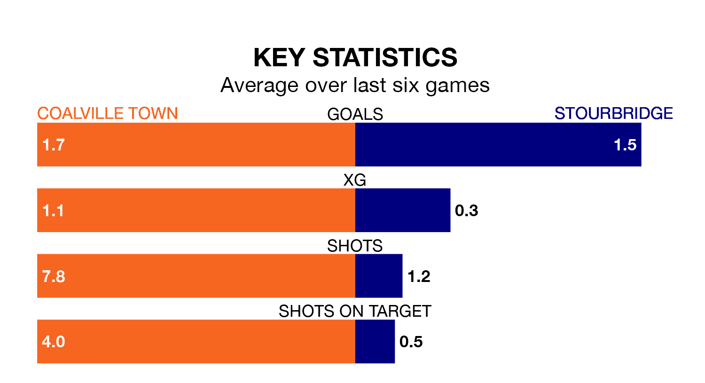

Coalville Town face Stourbridge on Saturday seeking to protect their long unbeaten run in Southern League Premier Central.
Coalville are unbeaten in five, with two wins and three draws, ahead of the 3pm kick-off.
They face a Stourbridge team who have won just one and lost four over the same number of games.
With 53 goals in 23 games so far this season, Coalville are the league's joint-highest scorers with 2.3 goals per game. But they are conceding more than average too, letting in 39 goals at a rate of 1.7 per game.
Stourbridge are also above average scorers, with 1.6 goals per game, compared to a league average of 1.5. They have conceded 1.4 goals per game.
In the last 10 years, Coalville and Stourbridge have played each other on 14 occasions. Coalville won four of them, Stourbridge eight, and they drew twice.
On average, Coalville scored 1.9 goals and Stourbridge 2.2 in those matches.
Their last meeting was on August 5, when Stourbridge won 4-2 at home.
The visitors are 16th in the table after 23 games, of which they have won nine and drawn three, earning 30 points.
Town are five places ahead of Stourbridge in 11th, with 10 wins and four draws putting them on 34 points.
Coalville's last match was on January 6, a 4-2 win against Redditch United.
Stourbridge beat Kettering Town 2-1 last time out, on January 13.
Updated: 06:13 (UTC), 18/01/24